Bi-NAS: 通过双层神经架构搜索优化个性化推荐解释
这篇论文来自 Virginia Tech，并有 Google 与 Amazon 合作作者参与，论文入口为 arXiv:2607.01387。论文关注的是可解释推荐：不仅要把物品排到用户面前，还要解释为什么这个物品和用户偏好、历史行为、物品属性相匹配。作者在论文首页声明代码和数据发布在 wulongfeng/Bi-NAS，本轮记录为作者声明链接，未做代码复现。
<strong style="color:#c2410c">推荐系统已经能给出个性化建议，但用户如果看不到清晰、可靠、贴合自身偏好的解释，就很难信任推荐结果；已有解释方法要么依赖大量人工设计、跨数据集泛化差，要么直接借助 LLM 生成文本而引入幻觉和泛化模板。Bi-NAS 要解决的正是如何自动搜索适合当前数据集的可解释架构，并把用户偏好特征与物品质量特征对齐后再生成解释。</strong>
1. 背景和问题
可解释推荐的难点不只是“给推荐结果配一段自然语言”。如果解释只是“你的朋友买过”或“很多人喜欢这个商品”，它确实能被读懂，却不一定能提高用户决策质量；如果解释能指出用户过去关心价格与质量，而当前商品在这些特征上评价较好，这种解释才更接近论文所谓 effective explanation。Bi-NAS 把这一点作为问题入口：推荐解释应同时反映用户意图和物品属性，而不是把模型打分结果翻译成通用话术。
论文从评论数据出发，因为评论里同时包含用户长期关注的方面和物品被评价出的质量信号。用户多次提到价格、尺寸、画质、耐用性，说明这些方面在其偏好里有权重；许多用户评价某件商品的质量、颜色或声音效果，则说明这些方面能构成物品侧的特征证据。基于这种视角，解释生成不是最后一步才发生的文案生成，而是从数据预处理、特征表示、跨注意力、交互函数到 LLM prompt 都必须围绕“哪些特征真正连接了用户和物品”来组织。
现有方法的第一类问题是人工设计成本高。协同过滤式解释、路径式解释、attention-based 解释或 counterfactual 解释都能提供某种可解释信号，但解释路径、注意力结构、交互函数往往要依赖研究者先验。这个人工先验一旦固定，就容易在一个数据集上有效、换到另一个类目就失灵。推荐数据集之间的差异非常大：乐器类目用户和物品较少但密度高，服装类目规模大且稀疏；如果同一个 attention 架构和交互函数被硬套到四个场景，解释粒度和推荐效果都可能受限。
第二类问题是 LLM 解释的幻觉与泛化。LLM 很适合把结构化事实改写成自然语言，但如果让它直接根据“用户、物品、历史购买”自由解释，模型可能生成流畅却不真实的理由。论文的处理方式比较保守：先通过可解释推荐模型找出用户偏好和物品质量之间共享、对齐的特征，再把这些特征作为 prompt 槽位交给 LLM。这使 LLM 更像一个受控的语言生成器，而不是解释事实的来源。
第三类问题是评价口径。推荐解释既要服务推荐准确性，又要服务解释有效性。只提高 Hit@10 或 NDCG@10，不代表解释真的落在用户关心的特征上；只生成好看的解释文本，也不代表推荐排序变好。Bi-NAS 因此把推荐性能和解释质量都纳入实验：前者看 Hit@10、NDCG@10、MRR，后者把用户评论中的正向特征当作 ground truth，计算解释特征的 Precision、Recall 和 F1。这种设计没有完全覆盖真实用户满意度，但至少把“解释是否说中用户评论里的正向特征”变成了可量化指标。
本文的核心判断是：可解释推荐需要一个会随数据集变化的结构，而不是一套固定人工结构。NAS 的价值在这里不是追求更复杂的模型，而是把 cross-attention 构造和 feature interaction function 这两个原本靠经验挑选的部件放进搜索空间。Bi-NAS 的“Bi”主要体现在双层优化：外层搜索架构，内层学习模型权重；架构参数在验证集上优化，网络权重在训练集上优化。这样做的目标是让推荐准确性、解释特征对齐和跨数据集适配能力一起进入优化链条。
从推荐系统链路看，这个问题还牵涉“解释是谁的责任”。如果解释只由后处理模块负责，排序模型可以继续使用黑盒特征，文案模型再从用户画像里挑几句话补上；这种路径短期容易上线，却很难保证解释与打分证据一致。Bi-NAS 反过来要求排序中间层先学会哪些用户特征、物品特征和 ID 信号应该连接，再让解释生成消费这些连接结果。它的研究问题因此不只是文本生成，而是把解释约束嵌进推荐模型结构选择。
2. 方法
2.1 从评论抽取偏好和质量特征
论文首先把评论转成用户侧和物品侧的特征向量。输入包括用户集合、物品集合、特征集合以及观察到的 user-item interactions。作者使用 phrase-level sentiment 工具从评论中抽取 Aspect、Opinion、Sentiment 三元组，例如价格、质量、颜色、尺寸等 aspect，以及 high、good、fit 等 opinion。用户侧的向量表示用户多频繁提到某个特征，物品侧的向量同时考虑该特征被提到的频率和平均情感。这个预处理是整篇论文的解释基础：后续模型搜索到的不是抽象隐向量之间的关系，而是用户关心的特征与物品被评价出的质量之间的对齐。
符号解释：$f_u^k$ 表示用户 $u$ 对特征 $f_k$ 的偏好强度，$f_i^k$ 表示物品 $i$ 在特征 $f_k$ 上的质量分数，$T$ 是最大评分，$c_u^k$ 是用户提到该特征的频次，$c_i^k$ 是物品被评论到该特征的频次，$s_i^k$ 是该物品在该特征上的平均情感。用户侧只用频率，因为频繁评论某方面通常意味着用户关心；物品侧把频率与情感相乘，因为物品是否“在这个方面好”需要正负评价共同决定。这里的 sigmoid-like 映射把不同频率压到 $[0,T]$ 范围，避免高频特征无限放大。
2.2 推荐组件与跨注意力对齐
在推荐模型主体上，Bi-NAS 沿用 deep recommender 常见的三层结构：embedding layer、interaction layer 和 output layer。Embedding layer 接收用户 ID、物品 ID、用户评论特征和物品评论特征，输出四类表示。Interaction layer 显式捕捉用户特征与物品特征之间的交互；Output layer 用 MLP 和 sigmoid 输出用户与物品交互概率。这个框架本身并不新，关键在于论文把 cross-attention 放到用户/物品 embedding 与特征 embedding 之间，让模型能学习“用户的哪些特征”和“物品的哪些特征”应该被强调。
符号解释：$e_u$ 和 $e_i$ 是用户与物品 ID 的 embedding，$f_u$ 和 $f_i$ 是用户侧与物品侧评论特征 embedding。这个式子说明模型不是只用 ID 协同过滤，也不是只用文本特征，而是把 ID 信号与可解释特征信号并列输入。<strong style="color:#2563eb">Bi-NAS 的一个关键点，是让可解释特征进入推荐模型中间层，而不是只在最终推荐结果之后再生成解释。</strong>
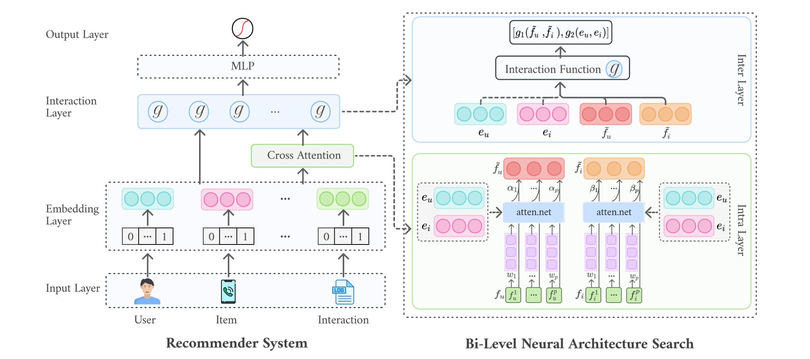
图后解读：原文 Figure 2 左侧是普通推荐系统：输入层包含用户、物品和 interaction，embedding layer 把这些字段转成向量，interaction layer 用函数 $g$ 捕捉特征交互，最后由 MLP 输出推荐分数。右侧是 Bi-NAS 的搜索对象：下半部分是 intra-layer，也就是用户/物品 embedding 如何影响用户/物品特征的 cross-attention；上半部分是 inter-layer，也就是 $\tilde f_u$、$\tilde f_i$、$e_u$、$e_i$ 经过什么交互函数融合。图中值得注意的是，NAS 不搜索整个推荐系统的所有细节，而是集中在解释性最相关的两个位置：特征 attention 和特征交互。这样搜索空间足够小，能够被双层优化处理；同时又足够贴近解释任务，因为最终解释来自被强调和对齐的特征。
跨注意力的基础形式是让用户 embedding 对用户评论特征赋权，让物品 embedding 对物品评论特征赋权。论文以用户侧为例写成：
符号解释：$\alpha_k$ 是用户 $u$ 对第 $k$ 个用户评论特征的 attention 权重，$e_u$ 是用户 embedding，$w_k$ 是第 $k$ 个特征词 embedding，$M_a$ 是用户 embedding 与特征 embedding 之间的映射矩阵，$\beta_k$ 是物品侧对应权重，$\odot$ 是逐元素乘法。式子背后的直觉是，如果用户 ID 表示和某个特征 embedding 更相关，该特征会在 $\tilde f_u$ 中被放大；如果物品在某个特征上更有代表性，该特征会在 $\tilde f_i$ 中被放大。论文进一步不把这一种 attention 写死，而是定义 att0 到 att3 四种构造：用户偏好可以影响用户特征，也可以影响物品特征；物品特征也可能反向影响用户特征；甚至二者可以互相影响。
2.3 搜索空间和交互函数
NAS 的搜索空间分成 intra-layer 和 inter-layer 两部分。Intra-layer 搜索 cross-attention 怎么构造，也就是 att0、att1、att2、att3 之间选哪一种；inter-layer 搜索对齐后的特征和 ID embedding 怎么融合。操作集合为 Plus、Multiply 和 Concat：Plus 强调加性合作，Multiply 强调选择性和互相调制，Concat 扩展特征空间，让后续 MLP 自己学习组合。论文没有让这些操作靠人工经验固定，而是把它们作为候选架构的一部分。
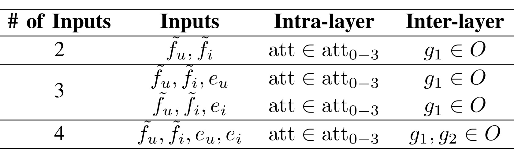
图后解读：原文 Table I 把搜索空间压成一个非常具体的组合表。输入数量为 2 时，只使用 $\tilde f_u$ 和 $\tilde f_i$，inter-layer 只需要一个操作 $g_1$；输入数量为 3 时，可以额外加入 $e_u$ 或 $e_i$，仍然只使用一个主要交互操作；输入数量为 4 时，$\tilde f_u$、$\tilde f_i$、$e_u$、$e_i$ 都进入融合，需要 $g_1$ 和 $g_2$ 两个操作。结合四种 attention 构造和 18 种 inter-layer 组合，最终搜索空间是 72 个候选架构。这个规模很关键：它比全模型 NAS 小得多，因此可搜索；但它覆盖了“是否只依赖特征、是否加入 ID embedding、使用哪种融合函数、用户和物品谁影响谁”这些可解释推荐最敏感的设计点。
交互函数的核心形式如下：
符号解释：$I$ 是 interaction layer 的输出，$g_1$ 用于融合 attention 后的用户/物品特征，$g_2$ 用于融合用户/物品 ID embedding，$g_1,g_2 \in O$，而 $O=\{\mathrm{Plus}, \mathrm{Multiply}, \mathrm{Concat}\}$。这里 $g_2$ 不一定总是存在，因为当模型只使用特征对齐或只保留一侧 ID embedding 时，第二部分可能被移除。<strong style="color:#c2410c">这也带来一个实际边界：Bi-NAS 搜到的架构不一定更可解释给人看，它首先是为了让特征对齐和推荐打分更有效；解释文本仍要依赖后续的特征选择和 LLM 生成约束。</strong>
2.4 双层优化与受控 LLM 解释生成
Bi-NAS 使用连续松弛把离散操作搜索变成可微优化。每条边原本要从 Plus、Multiply、Concat 或 Not connected 里选择一个操作；论文把这种选择写成操作权重 $\lambda$ 的混合，然后在搜索结束时取权重最大的操作离散化。这样做借鉴了 differentiable NAS 的思路：不需要枚举训练所有候选架构，也不需要强化学习式反复采样，而是通过梯度优化架构参数和网络参数。
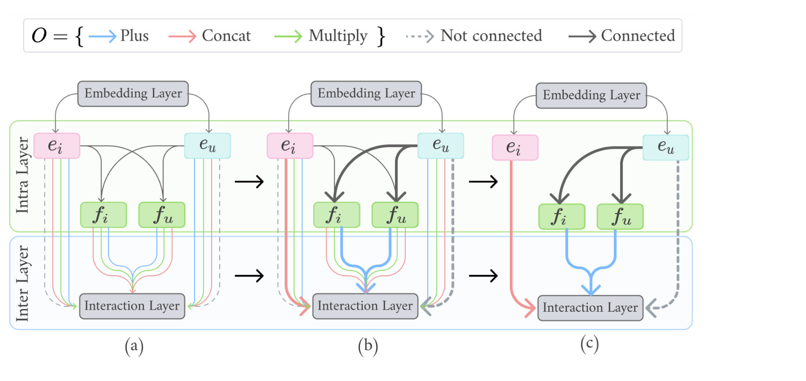
图后解读：Figure 3 分三步解释优化策略。(a) 把每条边上的离散候选操作放进连续空间，边上可以同时带有多种操作的权重；(b) 用双层 NAS 学习这些边权和网络表示，节点是要学习的 latent representation，边是 plus、multiply、concat 等候选操作；(c) 搜索结束后选出权重最大的边和操作，形成最终架构。这个图和 Table I 是配套的：Table I 定义“可以搜什么”，Figure 3 定义“怎么搜”。对推荐系统工程而言，重要的是它没有把整个线上排序模型变成不可控的巨型搜索问题，而是把搜索集中在可解释特征对齐和交互函数上。
符号解释：$g_t$ 是操作集合 $O$ 中第 $t$ 个候选交互函数，$\lambda_t$ 是该操作的连续权重，$C=\{\lambda,\|\lambda\|_0=1,0\leq \lambda_t\leq 1\}$ 表示最终只能选择一个操作。训练过程中用 $\hat g$ 让梯度可以流过操作权重，搜索结束再用最大权重离散化。这个设计的优点是效率高于穷举，缺点是搜索结果会受连续松弛和验证集划分影响，未必等同于真实线上最优。
符号解释：$\lambda$ 是架构参数，$w$ 是模型权重，$L_{\mathrm{train}}$ 是训练集损失，$L_{\mathrm{val}}$ 是验证集损失。内层在给定架构参数时学习权重，外层用验证集选择架构。论文把具体推荐损失写成 $L=L(y,\mathrm{MLP}_w(att_i,\hat g))$，其中 $y=1$ 表示用户与物品有交互，否则为 0。双层目标对应的是“权重在训练集上拟合，架构在验证集上泛化”，这也是它比单纯在训练集上挑交互函数更稳健的原因。
最后，Bi-NAS 将搜索得到的对齐特征用于解释生成。论文示例中使用 Amazon-Video 数据和 Llama-3.1-8B-Instruct：先根据用户重视的特征形成 general user profile，再根据用户历史推荐 5 个相关物品，然后把用户 profile、purchase history、recommended item 和 shared features 填入 prompt，让 LLM 生成短解释。
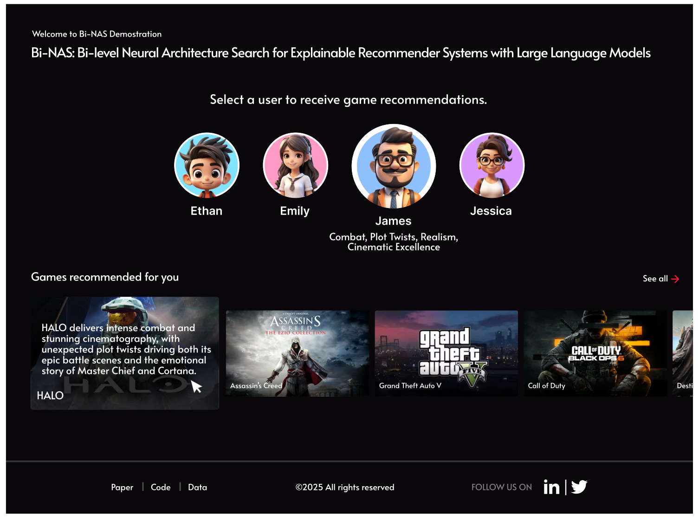
图后解读：Figure 4 展示的是论文的 demo 界面。上方是多个用户账户，每个账户有不同偏好；选中 James 后，界面展示围绕 Combat、Plot Twists、Realism、Cinematic Excellence 等偏好的游戏推荐。下方 HALO 卡片的解释强调 intense combat、stunning cinematography、unexpected plot twists 等特征。这张图不是主实验结果，而是说明论文希望最终解释能在产品界面中以用户可读方式出现。对工程落地而言，图中也暴露了一个边界：解释生成是面向用户的文本和 UI，模型离线指标只是前置条件，真正上线还要考虑文案长度、敏感词、版权素材、用户画像展示权限和实时延迟。
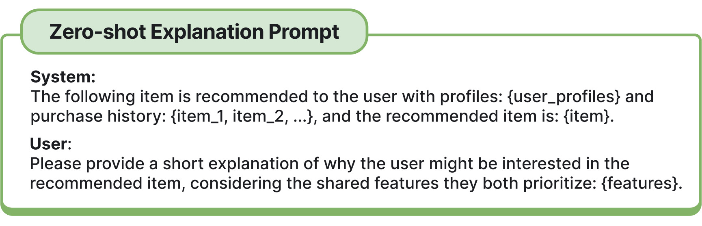
图后解读：Figure 5 是解释生成最关键的安全边界。System 消息规定“某物品被推荐给具有 user_profiles 和 purchase history 的用户，推荐物品是 item”；User 消息要求模型基于 shared features 给出短解释。这个 prompt 的设计使 LLM 不直接决定推荐理由，而是把 NAS 对齐出来的共享特征作为解释依据。换句话说，Bi-NAS 的语言生成不是“LLM 看见用户历史后自由发挥”，而是“推荐模型先确定可解释特征，LLM 再把这些特征翻译成人话”。这能降低幻觉风险，但不能完全消除风险：如果 shared features 本身抽错了，或者用户 profile 过度概括，LLM 仍可能把错误特征写得非常自然。
3. 实验结果
论文在 Amazon 数据集的四个 top-level 类目上做实验：Instrument、Video、Beauty、Clothing。原始数据是 user-item-review triplet，预处理时保留带文本评论的交互，把 4 星和 5 星评论视为正反馈，其余评论作为 unlabeled feedback 并做负采样。训练、验证、测试按 70%、20%、10% 随机划分，只考虑正样本超过 5 个的用户。推荐性能指标是 Hit@10、NDCG@10、MRR；解释性能则把评论中用户对物品特征的正向情感作为 ground truth，评估解释特征的 Precision、Recall 和 F1。
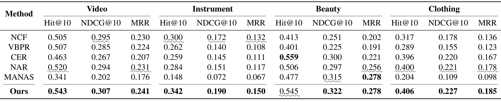
图后解读：原文 Table II 是推荐性能主表。Bi-NAS 在 Video 上 Hit@10/NDCG@10/MRR 分别为 0.543、0.307、0.241，均高于 NCF、VBPR、CER、NAR、MANAS；Instrument 上 0.342、0.190、0.150 也全指标最好；Clothing 上 0.406、0.227、0.185 全指标最好。Beauty 的情况更细：CER 在 Hit@10 上达到 0.559，高于 Bi-NAS 的 0.545；MANAS 和 Bi-NAS 的 MRR 都是 0.278，Bi-NAS 的 NDCG@10 最高为 0.322。这说明 Bi-NAS 的推荐准确性整体强，但不是每个指标都绝对第一。论文作者特别强调 NAR 是固定 cross-attention 与交互配置的 attention 模型，Bi-NAS 能稳定超过 NAR，支持“固定人工架构不够泛化”的论点。
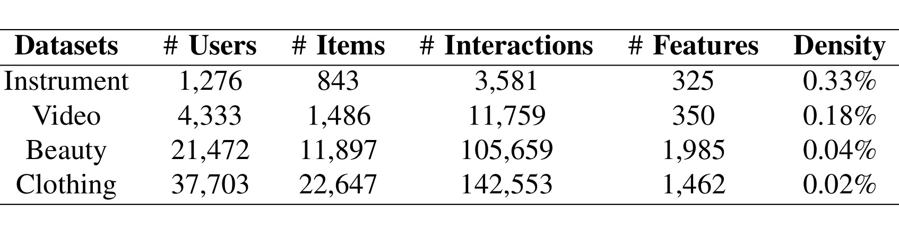
图后解读：Table III 展示四个类目的规模差异。Instrument 只有 1,276 个用户、843 个物品、3,581 次交互、325 个特征，密度 0.33%；Video 是 4,333 用户、1,486 物品、11,759 交互、350 特征，密度 0.18%；Beauty 扩大到 21,472 用户、11,897 物品、105,659 交互、1,985 特征，密度降到 0.04%；Clothing 最大，37,703 用户、22,647 物品、142,553 交互、1,462 特征，密度只有 0.02%。这个表对理解论文贡献很重要：四个数据集不是同规模轻微变化，而是从相对稠密的小类目到极稀疏的大类目。若同一个 cross-attention 和 inter-layer 函数能在所有类目上最优，反而不符合数据差异；Bi-NAS 搜到不同结构才是合理现象。
解释质量指标来自特征级匹配。论文设 $R_{u,i}^k=1$ 表示用户 $u$ 对物品 $i$ 的评论在特征 $f_k$ 上有正向情感；如果模型生成的解释提到该特征，则 $I_{u,i}^k=1$。Precision 看生成解释中有多少特征是真的用户正向关注，Recall 看用户正向关注的特征有多少被解释覆盖，F1 是二者调和平均。论文给出的公式是：
符号解释：$R_{u,i}^k$ 是评论 ground truth，表示用户-物品对在特征 $f_k$ 上是否有正向情感；$I_{u,i}^k$ 是模型解释命中的特征指示变量；$p$ 是特征数量。这个评价的优点是自动化、可复现，能用评论特征衡量解释是否贴近用户真实反馈；缺点是它默认评论里的正向特征就是解释目标，未覆盖用户没有写进评论但实际影响决策的隐性偏好。
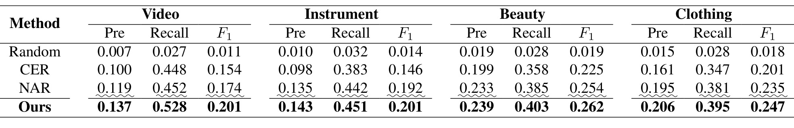
图后解读：Table IV 显示 Bi-NAS 在四个类目的解释 F1 都最高。Video 上 Bi-NAS 的 Precision/Recall/F1 为 0.137/0.528/0.201，高于 NAR 的 0.119/0.452/0.174；Instrument 上 0.143/0.451/0.201，也高于 NAR 的 0.135/0.442/0.192；Beauty 上 0.239/0.403/0.262，高于 NAR 的 0.233/0.385/0.254；Clothing 上 0.206/0.395/0.247，高于 NAR 的 0.195/0.381/0.235。提升不是数量级变化，但在四个数据集上方向一致。CER 的 Recall 在部分数据集不低，但 F1 明显落后，论文解释为 CER 依赖 item-oriented perturbation，解释用户排序决策时会平均多个已评论物品的扰动，粒度被稀释。
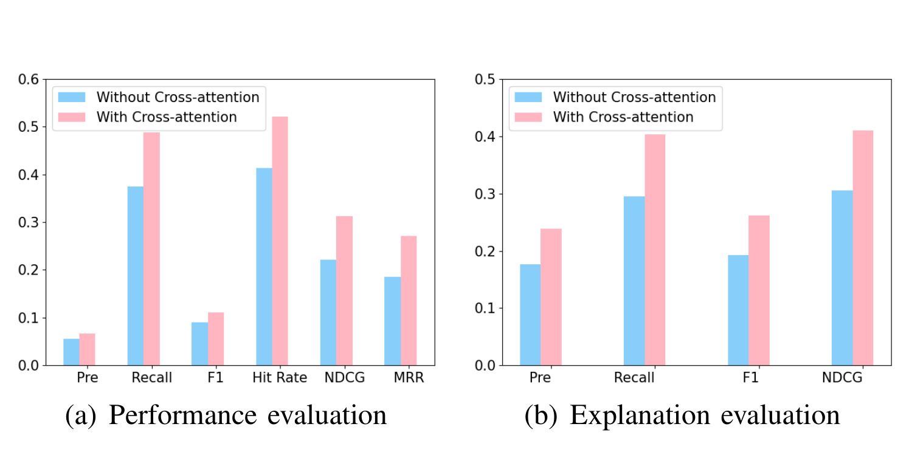
图后解读：Figure 6 是 Beauty 数据集上的 cross-attention 消融。左图把推荐性能指标放在一起，右图展示解释评价；粉色柱代表 With Cross-attention，蓝色柱代表 Without Cross-attention。可以看到加入 cross-attention 后，Recall、Hit Rate、NDCG、MRR 以及解释侧 Recall、F1、NDCG 都上升。这个结果支撑论文的核心机制：用户特征和物品特征不是简单拼接即可，cross-attention 能让模型学习“用户在意的特征”和“物品表现好的特征”之间的对齐。需要注意的是，论文正文只展示 Beauty 的关键结果，并称其他数据集趋势相似；因此这张图能证明机制方向，但不是完整消融矩阵。
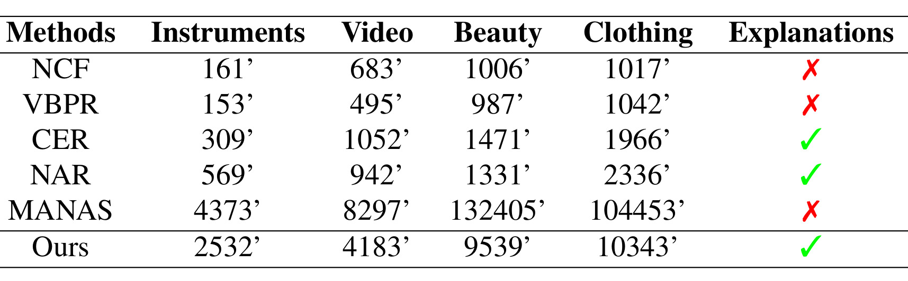
图后解读：Table V 把计算成本放到同一个表中。Bi-NAS 在 Instrument/Video/Beauty/Clothing 上耗时 2532、4183、9539、10343 分钟，显著低于 MANAS 的 4373、8297、132405、104453 分钟，尤其在大数据集上差距很大。这说明连续松弛和限定搜索空间确实降低了 NAS 成本。另一方面，Bi-NAS 仍明显慢于 NCF、VBPR、CER、NAR，例如 Clothing 上 NAR 为 2336 分钟，而 Bi-NAS 是 10343 分钟。工程上这意味着 Bi-NAS 更适合离线结构搜索或周期性重训，不适合在频繁变化的线上场景中高频重新搜索；如果每日类目分布变化很大，搜索成本会成为实际门槛。
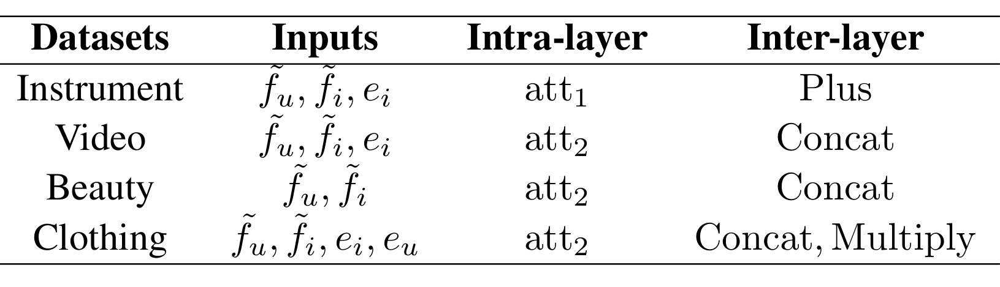
图后解读：Table VI 展示每个数据集最终搜索到的输入、intra-layer 和 inter-layer 函数。Instrument 选择 $\tilde f_u,\tilde f_i,e_i$，attention 是 att1，inter-layer 是 Plus；Video 也使用三个输入，但 attention 是 att2，inter-layer 是 Concat；Beauty 只使用 $\tilde f_u,\tilde f_i$，attention 是 att2，inter-layer 是 Concat；Clothing 使用 $\tilde f_u,\tilde f_i,e_i,e_u$ 四个输入，attention 是 att2，inter-layer 是 Concat 与 Multiply。这个表是论文“个性化架构搜索”最直接的证据：小类目不一定需要和大类目一样的输入组合，稀疏大类目可能更需要 ID embedding 与特征 embedding 同时参与。它也提醒我们，Bi-NAS 的解释能力不是来自某个固定 attention 模块，而是来自对不同数据集结构差异的适配。
综合来看，实验支持三个结论。第一，Bi-NAS 在多数推荐指标上优于或接近最强 baseline，尤其在 Instrument、Video、Clothing 上主结果完整领先。第二，解释质量 F1 在四个类目都最好，说明 NAS 搜索出的特征对齐不仅改善排序，也改善解释特征匹配。第三，cross-attention 是关键组件，但搜索成本仍然高，Bi-NAS 的优势更像是“用可控的离线搜索换取更好的解释架构”，而不是一个轻量级线上模块。论文没有给出真实用户点击解释、满意度、信任度或 A/B 实验，因此不能把离线解释指标直接等同于用户体验提升。
4. 总结
4.1 我的判断
Bi-NAS 的价值在于把可解释推荐中最容易靠经验拍脑袋的两个设计点显式纳入搜索：cross-attention 怎么构造，feature interaction 怎么融合。它没有把 LLM 当成解释事实来源，而是让 LLM 消化对齐后的共享特征，这一点比“直接让大模型解释推荐”更稳健。对推荐系统而言，这篇论文最值得看的不是 LLM prompt 本身，而是它试图把“解释有效性”前移到模型结构和特征对齐阶段。
论文的证据链比较完整：有数据集规模表、推荐主结果、解释主结果、cross-attention 消融、时间成本和搜索到的架构。主结果并非每项都绝对领先，Beauty 的 Hit@10 仍是 CER 更高，但解释 F1 和整体多数据集表现支持 Bi-NAS 的主要论点。<strong style="color:#c2410c">最需要谨慎的是，离线评论特征匹配不等于用户真实信任提升，LLM 生成示例也不等于线上解释文案已经安全可用。</strong>
4.2 工程启发与复现建议
工程上可以借鉴三点。第一，把解释所需的用户偏好特征和物品质量特征在排序模型中显式建模，而不是在推荐结果后面临时做文本归因。第二，搜索空间应尽量围绕业务可解释模块设计，像本文只搜索 attention 构造和交互函数，而不是让 NAS 搜整个大模型或全排序塔。第三，LLM prompt 应只接收已经核验的用户 profile、历史和共享特征，避免把“推荐理由”完全交给生成模型自由发挥。
复现时我会优先检查四件事：评论特征抽取工具是否稳定，尤其 aspect/opinion/sentiment 三元组在中文、电商短评论或多模态内容中是否可靠；四个 Amazon 类目的 train/validation/test 划分和负采样是否与论文一致；Bi-NAS 搜索到的架构是否对随机种子敏感；LLM 生成解释时 shared features 的选择数量、顺序和 prompt 模板是否影响人类读感。若要迁移到工业推荐，还需要把搜索成本、特征服务延迟、解释审核、用户隐私和不同类目冷启动一并评估。
4.3 局限与后续跟进
本文的局限至少有四点。第一，解释 ground truth 来自评论中的正向特征，用户没有写出的真实偏好无法覆盖。第二，LLM 生成部分主要以 demo 和 prompt 模板呈现，缺少人类评估或线上实验支撑。第三，NAS 搜索成本仍高，虽然比 MANAS 快很多，但相对于普通推荐 baseline 仍是重训练开销。第四，代码和数据虽有作者声明链接，但本轮未复现，无法确认不同硬件、不同随机种子和不同预处理版本下的稳定性。第五，论文把评论特征作为核心解释信号，对无评论、短评论、噪声评论或跨语言场景的适应性还需要验证。
后续我会跟进三个方向：一是看作者仓库是否提供完整数据处理脚本和搜索日志，从而判断 Table VI 的架构选择是否可复现；二是把 Bi-NAS 与更近的 LLM4Rec 解释方法、人类满意度评测和真实 A/B 解释点击指标放在一起比较，避免只看离线 F1；三是关注能否把搜索结果蒸馏成轻量结构，或者把搜索频率降到类目级/周期级，使它更接近真实推荐系统的训练节奏。总体来说，Bi-NAS 是一篇把 NAS、可解释推荐和受控 LLM 解释生成连接起来的论文，值得作为“解释生成前置到模型结构”的代表案例阅读。